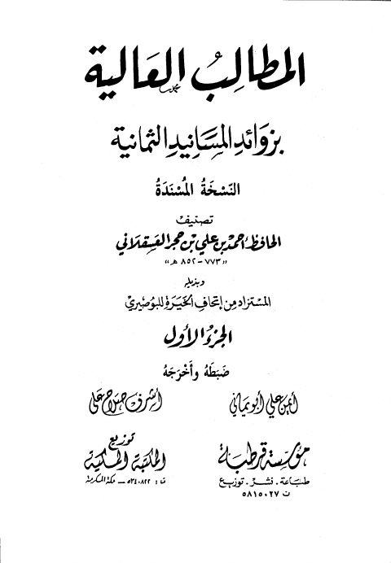

Downloads need an internet connection.
المطالب العالية بزوائد المسانيد الثمانية النسخة المسندة
Authors: أحمد بن علي بن حجر العسقلاني
Editors: أيمن علي أبو يماني أشرف صلاح علي
Publishers: المكتبة المكية مؤسسة قرطبة
**▫️ العنوان: المطالب العالية بزوائد المسانيد الثمانية النسخة المسندة** ▪️ المؤلف: #أحمد_بن_علي_بن_حجر_العسقلاني ▫️ المحقق: #أيمن_علي_أبو_يماني • #أشرف_صلاح_علي ▪️ الناشر: #مؤسسة_قرطبة • #المكتبة_المكية ▫️ تاريخ النشر: 1418هـ 1997م ▪️ بلد النشر: مكة المكرمة، #السعودية ▫️ الطبعة: 1 ▪️ عدد الأجزاء: 10 ▫️ نوع الوعاء: #كتاب ▪️ التصنيف الرئيسي: #الحديث_وعلومه ۪